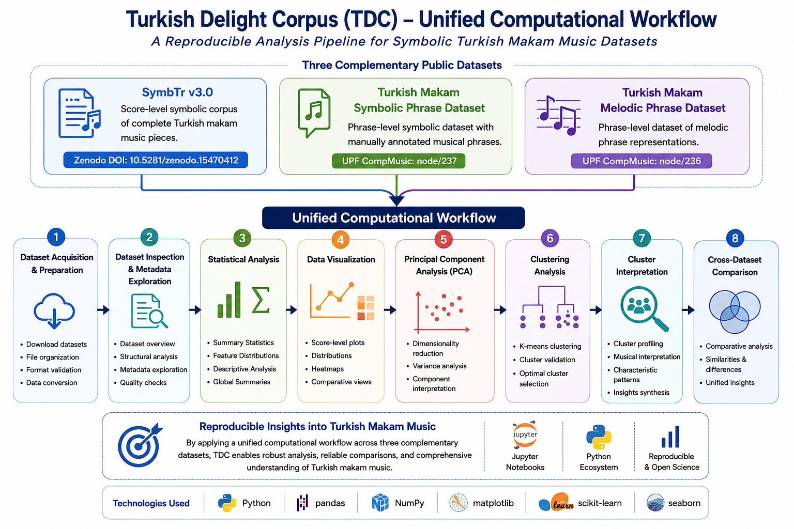

Welcome#
Welcome to Turkish Delight Corpus (TDC): A Repository for Turkish Makam Music Research and Computational Methods.
The Turkish Delight Corpus (TDC) is an open, interactive, and fully reproducible Jupyter Book that presents computational methods, educational resources, and analytical workflows for symbolic Turkish makam music research.
Rather than focusing on a single corpus, the handbook integrates multiple public symbolic Turkish makam music datasets within a unified computational framework. Using Python and Jupyter notebooks, readers can reproduce every stage of the analysis pipeline, from dataset acquisition to advanced computational musicology methods.
The project combines three complementary public datasets representing different levels of symbolic Turkish makam music. SymbTr v3.0 serves as the primary score-level corpus, while the Turkish Makam Symbolic Phrase Dataset and the Turkish Makam Melodic Phrase Dataset provide phrase-level representations that enable comparative computational analyses.
SymbTr Collection Overview#
The latest version of the SymbTr collection consists of:
Approximately 3000 musical pieces
164 makams (modal structures)
135 usuls (rhythmic cycles)
61 musical forms
About 1.200.000 musical notes
Roughly 145 hours of nominal playback time
The collection includes scores in multiple formats such as MusicXML, MIDI, PDF, text, mu2, making it suitable for computational analysis and music software applications.
Source: SymbTr v3.0 Zenodo record.
Who is this handbook for?#
This handbook is intended for researchers, educators, and students interested in computational approaches to Turkish makam music.
It is particularly suitable for:
🎓 Graduate students studying Music Information Retrieval (MIR), computational musicology, machine learning, and artificial intelligence
🔬 Researchers working on symbolic music analysis, digital humanities, and computational musicology
🎼 Musicologists interested in reproducible computational methods
💻 Data scientists exploring symbolic music datasets and machine learning workflows
🌍 Educators seeking open educational resources for computational music analysis
What you will learn#
By following this handbook, readers will learn how to:
Acquire and organize public symbolic Turkish makam music datasets
Explore musical metadata and corpus characteristics
Perform exploratory data analysis (EDA)
Compute descriptive statistics for multiple symbolic music datasets
Visualize symbolic music collections
Apply Principal Component Analysis (PCA)
Perform clustering and similarity analysis
Compare symbolic music datasets at score and phrase levels
Explore related datasets, computational research, and open research problems
Develop fully reproducible computational musicology workflows using Python
Together, these learning objectives are supported by three complementary public symbolic music datasets spanning multiple levels of musical representation.
Public Turkish Makam Music Datasets#
3 Public Datasets Reproducible Open Access
The Turkish Delight Corpus integrates three complementary public datasets representing different levels of symbolic Turkish makam music.
Dataset |
Description |
Official Resource |
|---|---|---|
SymbTr v3.0 |
Large-scale symbolic corpus containing complete Turkish makam music scores. It serves as the primary dataset for statistical analysis, visualization, Principal Component Analysis (PCA), clustering, and similarity analysis. |
|
Turkish Makam Symbolic Phrase Dataset |
Phrase-level symbolic dataset containing manually annotated musical phrases extracted from Turkish makam music. It supports phrase segmentation, annotation analysis, and comparative computational musicology. |
|
Turkish Makam Melodic Phrase Dataset |
Phrase-level symbolic dataset containing melodic phrase representations suitable for phrase-level statistical analysis, symbolic music processing, and comparative melodic analysis. |
Although these datasets differ in representation and analytical objectives, the computational workflow presented throughout this handbook can be applied consistently across all of them. Together, they establish a unified framework for exploratory data analysis, statistical analysis, visualization, dimensionality reduction, clustering, similarity analysis, and computational musicology.
How to use this handbook#
The handbook is organized as a sequence of independent but interconnected Jupyter notebooks.
For readers new to computational music analysis, the recommended reading order is:
Dataset acquisition
Dataset overview
Statistical analysis of SymbTr v3.0
Data visualization
Principal Component Analysis (PCA)
Clustering analysis
Cluster interpretation
Related symbolic music corpora
Statistical analysis of related datasets
Related datasets and computational research
Literature review
Open research problems
Contributing
Readers already familiar with these topics may use the navigation sidebar to access individual chapters directly.
Project Workflow#
The Turkish Delight Corpus demonstrates a complete end-to-end computational workflow for symbolic Turkish makam music analysis.
{kind=link}

Fig. 1 Unified computational workflow of the Turkish Delight Corpus (TDC) for reproducible analysis of symbolic Turkish makam music datasets.#
Each stage of the workflow is implemented as an independent Jupyter notebook, allowing readers to reproduce every computational step.
The workflow consists of:
Dataset acquisition and preparation
Dataset inspection and metadata exploration
Exploratory Data Analysis (EDA)
Statistical analysis
Data visualization
Principal Component Analysis (PCA)
Clustering analysis
Cluster interpretation
Related symbolic music corpora
Cross-dataset statistical analysis
Related computational research
Literature review
Open research problems
All analyses are fully reproducible and implemented using Python and Jupyter notebooks.
Technologies#
The computational analyses presented throughout this handbook are implemented entirely using open-source scientific computing tools.
Python
Jupyter Notebook
Jupyter Book
Pandas
NumPy
Matplotlib
scikit-learn
Citation#
If you use the Turkish Delight Corpus (TDC), the accompanying Jupyter notebooks, or any part of the computational workflow presented in this handbook, please cite the primary dataset and acknowledge this handbook in your publications.
Primary Dataset#
Karaosmanoğlu, M. K. (2025). Turkish Maqam Music Symbolic Data (SymbTr v3.0). Zenodo. https://doi.org/10.5281/zenodo.15470412
Handbook#
Altan Gülgün, N. T. (2026). Turkish Delight Corpus: An Open Handbook for Computational Analysis of Turkish Makam Music. Jupyter Book.
BibTeX#
@misc{tdc2026,
author = {Altan Gülgün, N. Tuğbagül},
title = {Turkish Delight Corpus: An Open Handbook for Computational Analysis of Turkish Makam Music},
year = {2026},
howpublished = {Jupyter Book},
note = {\url{https://ntugbagulaltangulgun.github.io/SymbTr-Analysis-Book/}}
}
Additional datasets, computational resources, literature reviews, open research problems, and bibliographic references are available throughout the Related Datasets, Literature Review, Open Research Problems, and Resources and References sections.